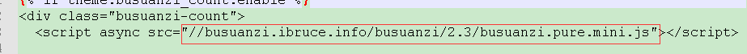
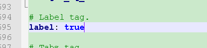

美化hexo博客
next使用文档
设置next主题
将主题解压到blog下的themes目录
修改_config.yml配置文件
theme: 你主题的目录名

更改主题布局
- next目录下的_config.yml配置文件
把#去掉即可使用该布局
Schemes:选项
#scheme: Muse
#scheme: Mist
#scheme: Pisces
#scheme: Gemini

添加标签与分类菜单
- next目录下的_config.yml配置文件
把#去掉即可使用该菜单
menu:选项
home: / || home
#about: /about/ || user
tags: /tags/ || tags
categories: /categories/ || th
archives: /archives/ || archive#schedule: /schedule/ || calendar
#sitemap: /sitemap.xml || sitemap
#commonweal: /404/ || heartbeat

git终端输入：
hexo n page tags
hexo n page categories
- 执行完后会在blog下的source，会自动生成tags与categories目录
打开blog/source/categories下的index.md文件
title: 分类
type: categories //需要自己添加

打开blog/source/tags下的index.md文件
title: 标签
type: tags //需要自己添加

使用方法：在文章的最顶端
tags:
- A
categories:
- B

设置默认为简体中文显示
blog下的_config.yml配置文件
language:选项
zh-Hans

修改网页样式
修改展开侧栏后的文章页宽
- 打开blog/themes/next/source/css/_variables/base.sty文件
$content-desktop-large选项
我这里使用的是700px，按个人需求调整

修改小型代码块颜色
- 打开blog/themes/next/source/css/_variables/base.sty文件
找到位置：
// Colors
// colors for use across theme.
// ————————————————–加入自定义颜色：
$my-code-foreground = #dd0055 // 用 `` 围出的代码块字体颜色
$my-code-background = #eee // 用 `` 围出的代码块背景颜色

- 打开
blog/themes/next/source\css/_custom/custom.styl文件
加入自定义样式：
// 文章 `` 代码块(等同于 <code></code> 代码块)的自定义样式
code {
margin: 0px 3px;
// 外围边框的大小与颜色
border: 1px solid #999;
}

| 代码块 | 预览 |
|---|---|
| `预览` | 预览 |
| <code>预览</code> | 预览 |
修改[Read More]按钮样式（[阅读全文]按钮样式）
- 打开
blog\themes\next\source\css\_custom\custom.styl文件
加入自定义样式：
1 |
|

预览：

标签云样式
搜索<div class="tag-cloud-tags">
// 修改这里
默认： {{ tagcloud({min_font: 12, max_font: 30, amount: 300, color: true, start_color: '#ccc', end_color: '#111'}) }}
</div>将内容修改为：
自定义：{{ tagcloud({min_font: 13, max_font: 31, amount: 1000, color: true, start_color: '#9733EE', end_color: '#FF512F'}) }}
预览：

详细参数请参考：Hexo官方文档-tagcloud样式
修改文章底部 # 号标签，改为图标
打开blog/themes/next/layout/_macro/post.swig文件
搜索rel="tag">#
将
#换成<i class="fa fa-tag"></i>

预览：

设置头像为圆形，头像旋转
打开blog\themes\next\source\css\_common\components\sidebar\sidebar-author.styl
添加样式：
1 |
|

效果预览：
隐藏底部”强力驱动”内容
打开
blog/themes/next/_config.yml将
powered与enable设置为：false

预览：

文章末尾添加”本文结束”标记
- 打开blog/themes/next/layout/_macro/post.swig文件
在{% if theme.wechat_subscriber.enabled and not is_index %}上一行添加：
<div style="text-align:center;color: #DC143C;font-size:25px;"> 自定义结束标记 </div>
添加背景图片
打开blog\themes\next\source\css\_custom\custom.styl文件
添加：
1 |
|
文章与右侧栏的设置
打开blog\themes\next\source\css\_custom\custom.styl文件
选择性添加：
1 |
|
往文章添加视频
代码块：
1 |
|
功能设置
侧栏添加建站时间
打开blog/themes/next/layout/_custom/sidebar.swig文件
添加：
1 |
|
网站侧栏即可预览
站内搜索
安装插件：
cnpm install hexo-generator-searchdb –save
打开blog/themes/next/_config_yml文件
local_search:选项里，enable:设置为true，top_n_per_article:设置为-1

网站最上方点击搜索即可预览
文章字数统计及阅读时常功能
安装插件：
cnpm install hexo-wordcount –save
打开blog/themes/next/_config_yml文件
post_wordcount:选项
1 |
|

站点访问统计功能
打开blog/themes/next/_config_yml文件
busuanzi_count选项里的enable:设置为true，page_pv:设置为false
打开blog/themes/next/layout/_third-party/analytics/busuanzi-counter.swig文件
将script async src=的网站修改为：
//busuanzi.ibruce.info/busuanzi/2.3/busuanzi.pure.mini.js

在网站最底部即可预览
文章阅读数统计
注册LeanCloud账号
进入
控制台，创建一个新应用点击应用，进入到
存储分页，创建一个名为Counter的class，限制写入挂钩
打开blog/theme/next/_config.yml文件
leancloud_visitors:选项
1 |
|
AppID和AppKey可以通过：
LeanCloud应用的设置页面下的自定义 API 服务域名下的应用keys找到
设置安全域名
有时候我们的会在本地通过locahost:4000浏览并编辑我们的页面，在这种情况下，
LeanClound会记录很多没有意义的浏览次数。为了让统计的浏览次数有意义，
我们可以在应用->设置->安全中心->Web安全域名中设置自己博客的域名，
只有该域名可以访问LeanCloud系统，因此只会记录在这个域名下的访客数据。
LeanCloud应用的设置页面下的安全中心，Web 安全域名里填写你的网站
选项卡功能
打开blog/themes/next/_config_yml文件
tabs:选项
1 | enable: true |
** A **
** AA **
** AAA **
写法：
1 | {% tabs 选项 %} |
侧栏添加网易云音乐播放器
从网易云官网获取外部链接

打开blog/themes/next/layout/_custom/sidebar.swig文件
写入:
1 |
|
修改网站图标
打开blog/themes/next/_config_yml文件
favicon选项
medium: 图标

设置主页文章的数量
打开blog/_config.yml配置文件
index_generator:选项
1 | path: '' |

点击下载按钮
预览：
点击进入百度源码：
1 |
|
label 标签
打开blog/themes/next/_config_yml文件
label:选项
label: true
写法：
1 | {% label default@内容 %} |
| 样式 |
|---|
| default |
| primary |
| success |
| info |
| warning |
| danger |

效果预览：
default
内容primary
内容success
内容info
内容warning
内容danger
内容
主页播图
在blog/themes/next/layout/_macro目录下，创建carousel.swig文件
carousel.swig文件内容:
1 |
|
注意：需要自己修改的东西：
1 |
|
打开/themes/next/layout/index.swig文件
- 找到 {% block content%}
往它的下一行添加：
1
2<!--轮播图-->
{% include '_macro/carousel.swig' %}
可能会出现的问题

解决方法：
- 打开
/themes/next/source/js/src/utils.js文件，搜索wrapImageWithFancyBox往var $image = $(this);下一行添加：if ($(this).hasClass(‘nofancybox’)) return;

打开blog/themes/next/layout/_macro/carousel.swig文件（也就是刚刚创建的文件）
找到img代码块，往代码块里面添加class="nofancybox"

代码复制功能
在blog/theme/next/source/js/src目录创建名为clipboard.min.js的文件
写入：
1 |
|
在blog/theme/next/source/js/src目录创建名为clipboard-use.js的文件
写入：
1 |
|
添加样式：
1 |
|
打开blog/themes/next/layout/_layout.swig文件
在最下方，/body之前添加：
1
2
3
<!-- 代码块复制功能 -->
<script type="text/javascript" src="/js/src/clipboard.min.js"></script>
<script type="text/javascript" src="/js/src/clipboard-use.js"></script>
往侧栏添加颗粒时钟
往themes/next/layout/_custom创建名为clock.swig的文件
往文件写入：
1 |
|
打开themes/next/layout/_custom/sidebar.swig
找个位置加入：
1 | <div id="lock"> |
归档美化
打开/themes/next/layout/_macro/post-collapse.swig文件,将post-meta这个div
移到前面header标签下
在/themes/next/source/css/_custom/custom.styl新增如下样式：
1 | /* 归档页样式 began */ |
标签页美化
在/themes/next/layout/目录下，新增tag-color.swig文件，填入如下内容：
1 | <script type="text/javascript"> |
在同级目录的page.swig文件，搜索:
1 | {% elif page.type === 'categories' %} |
在上面添加:
1 | {% include 'tag-color.swig' %} |
添加文章链接
点击链接前往文章1 | {% post_link linux笔记 '点击链接前往文章' %} |
由于3个`不能往选项卡里添加代码块，这里使用其他格式的代码块
1 | printf("hellow\n"); |
1 | {% codeblock %} |